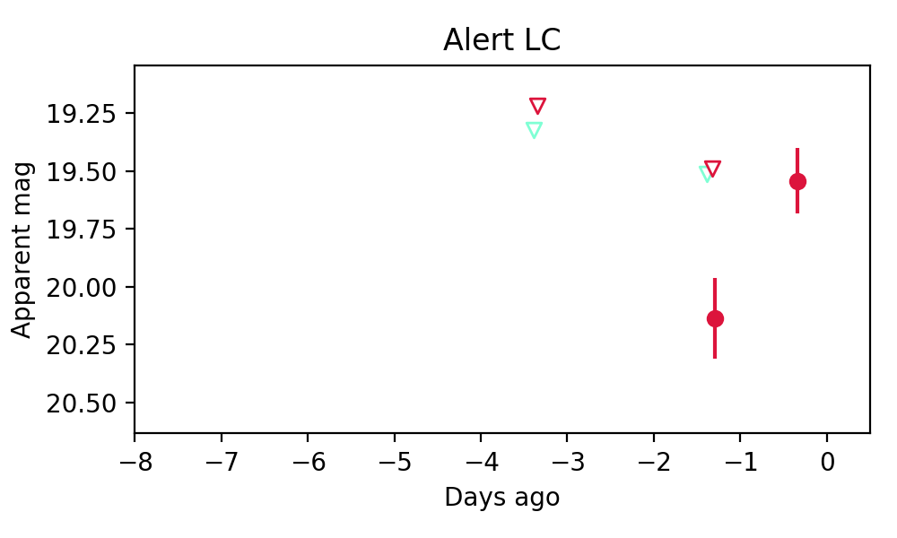
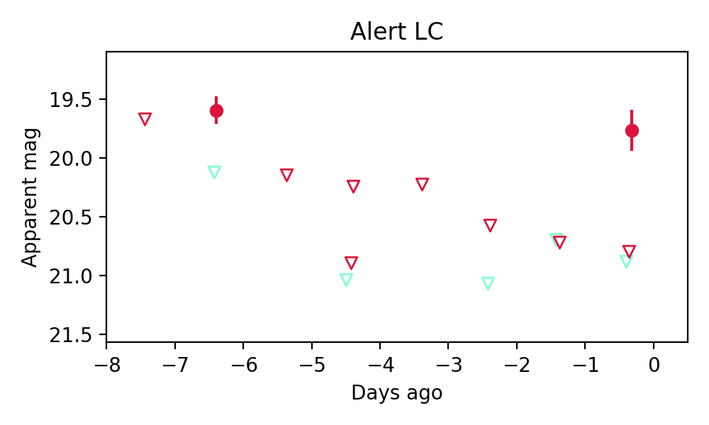

Candidate List 20250618Previous Day Next Day
Section 1: New Sources (age<1d) Section 2: Old (1-5d) sources observed last nightplaceholder
Section 1: New Afterglow/FBOT Cands Last Night (0)
Section 2: Older Sources Observed Last Night (3)
0. ZTF25aavqemm (FBOT?) [Back to Top] [Share] [Trigger Swift] [Fritz] [Lasair]RA, Dec: 287.87382, -19.14005 19h11m29.72s, -19d-8m-24.19sGalactic (l, b): 17.81909, -12.8851 ext(g-r) = 0.174

Milliquas v6 (2 arcsec):Found B (description), name = PMN J1911-1908, QSO probability: 0 %
PS1: 1 source in 3 arcsec Closest: d = 0.60 arcsec photoz=0.16+/-0.02 peak abs mag = -20.38
LegacySurvey: 0 sources in 3 arcsec

Extinction-corrected gr color:
From alerts: -0.79 +/- 99 mag
Rise Rate:
g: -99 mag/day
r: 0.62 mag/day
i: -99 mag/day
Fade Rate:
g: -99 mag/day
r: -99 mag/day
i: -99 mag/day
1. ZTF25aavqfsy (Afterglow?) [Back to Top] [Share] [Trigger Swift] [Fritz] [Lasair]RA, Dec: 231.09247, 35.79164 15h24m22.19s, 35d47m29.91sGalactic (l, b): 57.54494, 56.48492 ext(g-r) = 0.015
PS1: 0 sources in 3 arcsec
LegacySurvey: 0 sources in 3 arcsec

Extinction-corrected gr color:
From alerts: 1.1 +/- 99 mag
Rise Rate:
g: -99 mag/day
r: 26.72 mag/day
i: -99 mag/day
Fade Rate:
g: -99 mag/day
r: 0.66 mag/day
i: -99 mag/day
2. ZTF25aavqyee (Afterglow?FBOT?) [Back to Top] [Share] [Trigger Swift] [Fritz] [Lasair]RA, Dec: 337.21634, 56.09216 22h28m51.92s, 56d 5m31.77sGalactic (l, b): 103.9551, -1.4348 ext(g-r) = 0.984

PS1: 1 source in 3 arcsec Closest: d = 2.19 arcsec photoz=0.07+/-0.17 peak abs mag = -20.80
LegacySurvey: 0 sources in 3 arcsec

Extinction-corrected gr color:
From alerts: 0.54 +/- 99 mag
Rise Rate:
g: 0.11 mag/day
r: 9.36 mag/day
i: -99 mag/day
Fade Rate:
g: -99 mag/day
r: 40.37 mag/day
i: -99 mag/day